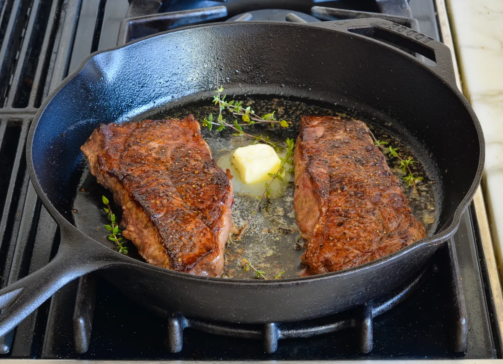

Steak

Description
Pan-seared steak is a culinary delight that promises a flavorful and juicy dining experience. This cooking method involves heating a well-seasoned steak in a hot skillet to create a mouthwatering sear on the exterior while locking in the natural juices and tenderness within. The process typically begins by seasoning the steak with salt, pepper, and any desired herbs or spices, allowing it to rest to reach room temperature. Then, a hot pan with a small amount of oil or butter is used to sear the steak for a few minutes on each side until it achieves a beautiful, caramelized crust. The result is a steak that boasts a savory, slightly charred exterior with a perfectly cooked interior, delivering a symphony of flavors and textures that make it a timeless favorite for steak enthusiasts.
Pan-seared steak can be customized to personal preferences, whether it's a succulent filet mignon, a robust ribeye, or a hearty New York strip. The cooking technique is celebrated for its simplicity and versatility, allowing for the addition of aromatic garlic and fresh herbs in the pan for extra depth of flavor. This culinary method is ideal for achieving the desired level of doneness, whether it's rare, medium-rare, medium, or well-done. The result is a delectable dish that pairs beautifully with a variety of sides, from creamy mashed potatoes to crisp, garden-fresh vegetables. Whether enjoyed in a classic steakhouse or prepared in the comfort of your own kitchen, a perfectly pan-seared steak is a culinary masterpiece that showcases the art of precision cooking and an appreciation for the finest cuts of meat.
Ingredients:
- 2 boneless steaks (e.g., ribeye, New York strip, or filet mignon)
- Salt and freshly ground black pepper
- 2 tablespoons vegetable oil or clarified butter (ghee)
- Optional: minced garlic, fresh herbs (rosemary, thyme), and butter for basting
Steps:
-
**Preparation:**
- Take the steaks out of the refrigerator and allow them to sit at room temperature for about 30 minutes. This helps them cook more evenly.
- Pat the steaks dry with paper towels to remove excess moisture, which promotes better searing.
- Season both sides of each steak generously with salt and freshly ground black pepper. You can also add minced garlic and fresh herbs for extra flavor.
-
**Heat the Pan:**
- Place a heavy skillet, such as a cast-iron pan, on the stovetop and heat it over medium-high to high heat. You want the pan to get very hot.
-
**Add Oil or Butter:**
- Add the vegetable oil or clarified butter (ghee) to the hot pan and swirl it to coat the bottom evenly. The oil should shimmer, indicating it's hot enough.
-
**Sear the Steak:**
- Carefully place the seasoned steaks into the hot pan. Be cautious, as it may splatter.
- Allow the steaks to sear without moving them for 2-3 minutes to develop a nice crust. For thicker steaks, you can sear for a bit longer. Adjust the time to your desired level of doneness.
-
**Flip and Sear the Other Side:**
- Flip the steaks using tongs and sear the other side for another 2-3 minutes (or more, if needed). Baste the steaks with butter and add minced garlic and herbs if desired.
-
**Check Doneness:**
- To determine doneness, you can use a meat thermometer. The internal temperature for rare is around 125°F (52°C), medium-rare is 135°F (57°C), medium is 145°F (63°C), and well-done is around 160°F (71°C).
- Alternatively, use the finger test to check doneness by pressing the steak and comparing the firmness to your hand's base.
-
**Rest the Steaks:**
- Remove the steaks from the pan and place them on a cutting board. Cover loosely with foil and let them rest for about 5 minutes. Resting helps redistribute the juices and keeps the steak juicy.
-
**Slice and Serve:**
- After resting, slice the steak against the grain into thin or thick slices, depending on your preference.
- Serve your delicious pan-seared steak with your favorite sides, such as mashed potatoes, roasted vegetables, or a simple salad.